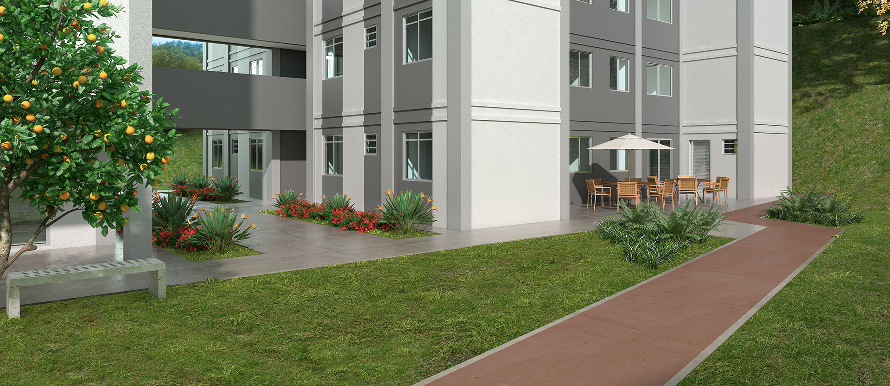

Conheça o mais novo empreendimento do bairro: "Honolulu"
25/09/2020 - Redigido por Bruna Santos
Novo condomínio já está sendo construído e promete uma luxuosa infraestrutura para os moradores.
O novo condomínio começou sua construção no ano passado (2019) e promete entrega em janeiro de 2022. O empreendimento promete 1 torre, guarita, vaga de garagem exclusiva e coberta, elevador digital, salão de festas, espaço gourmet, espaço kids, sala de jogos, pomar e pista de cooper. Está localizado na Rua Júlio de Castilho, 844 - Palmeiras, próximo ao centro comercial do bairro, contando com um supermercado da rede Supermercados BH há menos de 100 metros, academia de frente à construção, açougue, pet shop, farmácia, sorveteria e restaurantes. Além de estar na rua de baixo da praça principal do bairro: Praça São José, que conta com os aparelhos de ginástica da Prefeitura, árvores e uma bela vista. Fácil acesso para diversos bairros, tais como: Buritis, Betânia, Salgado Filho e Nova Cintra. Contando com os fatores de ainda ser um bairro residencial e de médio porte, acredita-se que terá um custo acessível para a classe média de BH, que já é o público do bairro.
São 83 unidades disponíveis, de 46,96 m²; 48,73 m²; 60,27 m² ou 62,27 m², sendo os com maior área com espaço externo, e dois quartos. Acabamento de oiso laminado na sala, quartos e áreas de circulação, piso em cerâmica no banheiro, cozinha e lavanderia, teto rebaixado em gesso para o banheiro.
O surgimento de um novo empreendimento no bairro irá modernizá-lo ainda mais, o que na opinião de muitos moradores, pode não ser um fator positivo. Muitos dos moradores são pessoas idosas ou de idade avançada e não entendem como benefício a modernização e aumento do fluxo de automóveis, o que ocorrerá contando com possíveis 83 novos veículos.
Entretanto, ao analisar o público jovem que vem crescendo na região, devido a escolas municipais, praças e pontos de preferência do grupo, será uma modernização do estilo de vida. Ao entrevistar uma moradora de 40 anos que vive na região desde sua infância, esta afirmou que: "O Palmeiras cresceu muito nos últimos anos, quando eu era criança esse condomínio que moro era uma fábrica abandonada e nem tinha rua asfaltada direito. Eu acho que não demora pra ficar do tamanho do Buritis".
De qualquer maneira, os moradores da região, em maioria, vivem no bairro há muitos anos e não possuem intenção de mudar. A tendência do bairro Palmeiras é crescer e se popularizar, valorizando mais ainda a região Oeste de BH.
Confira aqui a fonte com a reportagem completa.